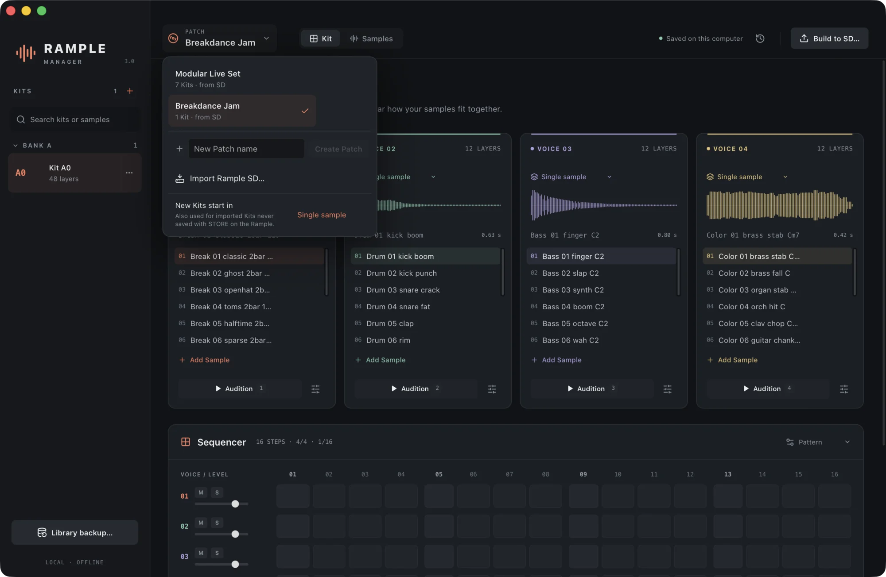
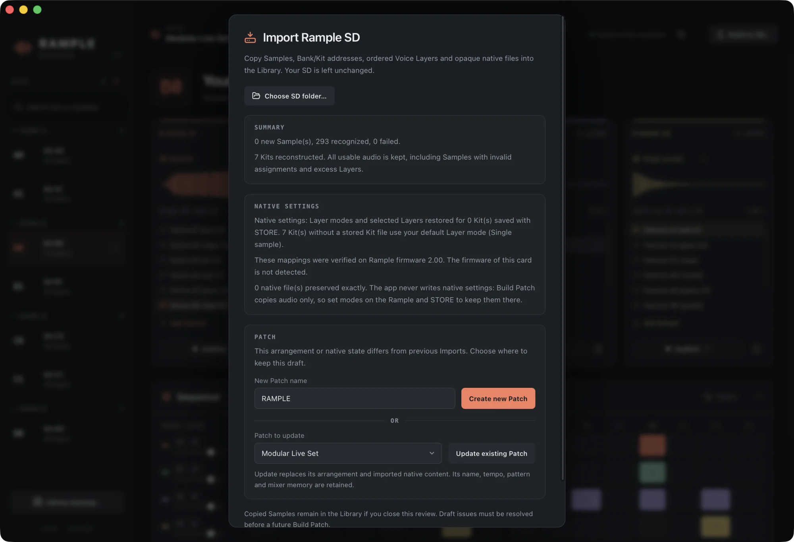
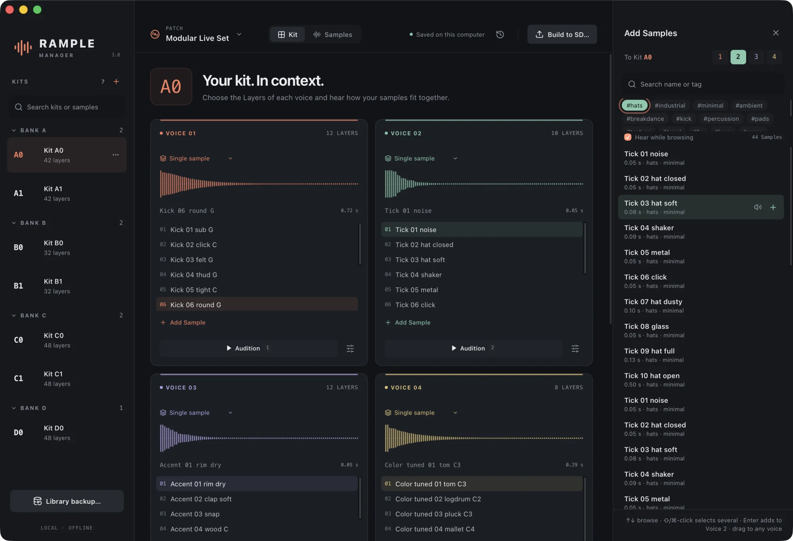
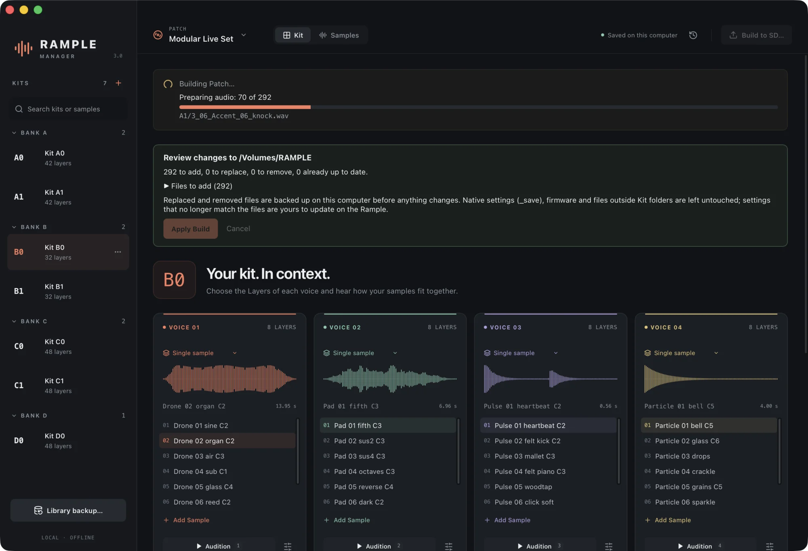
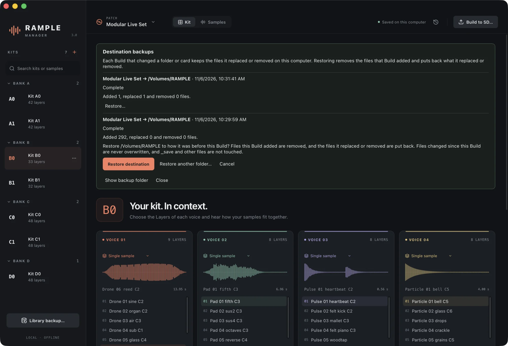

Install the app
Download the installer for your computer from the download page. Rample Manager is free, works offline and needs no account.
macOS 14 or later
- Open
Rample-Manager-macOS.dmg. - Drag Rample Manager onto Applications.
- Open it from Applications or Launchpad.
Windows 10 or 11 (64-bit)
- Run
Rample-Manager-Windows-x64-setup.exe. - It installs for your user only; no administrator needed.
- Open Rample Manager from the Start menu.
The first launch asks for permission. The app is not yet signed by Apple or Microsoft.
macOS: if a message says Apple cannot verify the app, click
Done, open System Settings → Privacy & Security, scroll
down and click Open Anyway. You only do this once. (Advanced: you can also run
xattr -dr com.apple.quarantine "/Applications/Rample Manager.app".)
Windows: if SmartScreen shows “Windows protected your PC”, click More info and then Run anyway.
Updating
Install a newer version over the old one. Your Library, Patches and settings are kept. If you used Rample Preview (the app's earlier name), Rample Manager opens the same Library automatically; you can then delete the old app.
Five words to know
Rample Manager uses the Rample's own vocabulary, plus a shared Library.
| Word | What it means |
|---|---|
| Library | Every sound you imported, stored privately on this computer. Your original files are kept exactly as they were. |
| Sample | One sound in the Library, with a name, tags and optional edits. |
| Patch | A complete SD card layout: up to 2,600 Kits from A0 to Z99. You can keep several Patches (a live set, a studio set…). All share the Library. |
| Kit | Four Voices at a Bank letter and number, such as A0 or C12. |
| Layer | One use of a Sample in a Voice, in order. A Voice holds up to 12 Layers; the same Sample can appear many times. |
The open Patch is the main screen
Everything you build lives on one screen: the Kits of the open Patch, the four voices of the selected Kit and a sequencer to hear them together.
 1
2
3
4
5
6
7
8
9
10
11
1
2
3
4
5
6
7
8
9
10
11
- 1Patch switcher. Choose, create, rename, duplicate or delete Patches, and import an SD card.
- 2Kit / Samples. Switch between building Kits and browsing the Library (⌘1 / ⌘2).
- 3Destination backups. Every Build that changed a card, with one-click restore.
- 4Build to SD. Review and write the whole Patch to a card or folder.
- 5Kits. The Patch's Kits in Rample order, grouped by Bank. + adds a Kit; ⋯ moves, duplicates or deletes one.
- 6Layer mode of each Voice: Single sample, Random, Sequential, Reverse sequential or Velocity.
- 7Layers in playing order. Click to select; hover to move, repeat or remove; drag to reorder.
- 8Add Sample opens the Add Samples panel for this Voice.
- 9Audition the Voice (keys 1–4) and, next to it, the sample editor.
- 10Sequencer. 16 steps per Voice with velocity, level, mute and solo.
- 11Library backup. Save or restore a complete, portable copy of your Library.
Switch and create Patches
Click the Patch name to open the switcher. Pick a Patch, type a name and press Create Patch, or use Import Rample SD…. The switcher also sets your default Layer mode for new Kits.

Import samples or a whole card
Rample Manager copies each sound into its private Library, so it keeps working after you move or delete the source. Importing the same audio again is recognised and keeps its name, tags and edits.
Sample files and folders
- Open Samples (⌘2).
- Click Import audio files… or Import folder….
- Read the result: what was imported, recognised or could not be read.
WAV, AIFF, FLAC and MP3, mono or stereo, any sample rate. Folders include their subfolders.
An existing Rample SD card
- Open the Patch switcher and choose Import Rample SD….
- Select the card (or a copy of it).
- Choose Create new Patch, or Update existing Patch if you imported it before.
Kits, Voice order and the Layer modes you STOREd on the Rample are restored.

Your files are safe. Imports only read their sources. Originals in the Library are never modified; edits are stored separately.
Find any sound quickly
The Samples view lists the whole Library. Combine filters, tags and search words, listen while you browse and send a Sample to any Kit.
 1
2
3
4
5
6
7
8
9
10
1
2
3
4
5
6
7
8
9
10
- 1Import files or folders into the Library.
- 2Search by name or tag. Every word must match:
kick industrial. - 3Filters: all Samples, those in the open Patch, those in no Kit, or the Trash.
- 4Tags. Pick several to narrow down; hover one to rename or delete it everywhere.
- 5Where it plays:
C0·V1means Kit C0, Voice 1 of the open Patch. - 6Rample mono plays the sound as the Rample will; Original plays the untouched file.
- 7Add as Layer to any Kit and Voice of any Patch (or press Enter).
- 8Used in lists every Layer that plays this Sample; click one to open its Kit.
- 9Name and tags, one tag per line. Tags ignore upper and lower case.
- 10Export the prepared WAV, or Move to Trash (recoverable).
Select several. Shift-click or ⌘/Ctrl-click rows to tag, add or trash many Samples at once.
Add Samples to voices
Click Add Sample on a voice card. The Add Samples panel opens beside the Kit and stays open while you audition, add and even switch Kits.

1 2 3 4 5 6- 1Target: the Kit and Voice that receive new Layers. Click 1–4 to change Voice.
- 2Search names and tags.
- 3Tag filters combine, like in the Library.
- 4Hear while browsing: ↑/↓ play each Sample as you move.
- 5+ (or Enter, or a double-click) adds it as the Voice's last Layer.
- 6Drag any row onto a voice card to add it there. A selection drags together.
Arrange Layers
- Hover a Layer to move it up or down, repeat it, or remove it. You can also drag it to a new position.
- Choose the Voice's Layer mode in the menu above its waveform (see the table below).
- Deleted something by mistake? Click Undo or press ⌘Z while it is shown. Kits and Patches undo the same way.
| App mode | On the Rample | Each trigger plays… |
|---|---|---|
| Single sample | MANUAL | the selected Layer |
| Random | RANDOM | a random Layer (repeats allowed) |
| Sequential | CYCLIC | the next Layer, then wraps around |
| Reverse sequential | REVERSE CYCLIC | the previous Layer, then wraps around |
| Velocity | VELOCITY | a Layer chosen by the step's velocity |
Modes are for listening here. Build to SD writes audio files only. To use a mode on the module, set it on the Rample and STORE.
Hear the Kit in context
The sequencer below the voice cards plays your Kit with sample-accurate timing, using the same mono 44.1 kHz audio the Rample will get.
- Open the Pattern menu and choose Load example beat, or click steps to switch them on.
- Press Space to play or stop. Set the tempo and each Voice's level, Mute and Solo.
- Alt-click or right-click a step to change its velocity (used by Velocity mode).
- Browse Kits with [ and ]: the beat keeps playing with the new sounds.
Patterns belong to the Patch. Tempo, steps and mixer are saved with each Patch on this computer; they are never written to the card.
Trim, tune and add effects
Select a Layer and click the sliders button beside Audition. Edits are settings over the complete original, so you can reopen a sound later and undo a trim or an effect.
 1
2
3
4
5
6
7
8
9
1
2
3
4
5
6
7
8
9
- 1Audition the sound alone, or Play sequence to hear it in the beat.
- 2Preview edits on or off to compare with the saved sound.
- 3Trim handles. Drag them, or type Start and End in seconds.
- 4Gain and pitch. Pitch is varispeed: it changes speed and length, like on tape.
- 5Equalizer: low, mid and high bands.
- 6Echo and reverb. Their tails become part of the sound.
- 7Discard edits drops the draft; closing does too.
- 8Save as new creates a Variant used only by this Layer.
- 9Overwrite shared Sample updates every Layer that uses this Sample, in every Patch.
Drafts are local. Until you save, changes affect only the Layer you opened, even if the same Sample is used elsewhere.
Write the Patch to your card
Build to SD… turns the open Patch into Rample folders and files. It works on an empty card, a card you already use, or any folder.
- Insert the SD card and click Build to SD… (top right).
- Choose the card's top folder (the one that contains
A0,_save…). - Read the review, then click Apply Build.
- Wait for the progress bar to finish, eject the card and put it in the Rample.
 1
2
3
4
5
1
2
3
4
5
- 1Destination and summary of every change.
- 2Files to add: new Layers and Kits.
- 3Files to replace: Layers whose sound or position changed.
- 4Up to date: files already matching your Patch, left untouched.
- 5Apply Build rechecks the card, backs up and only then writes.

What gets written
Every Layer becomes a mono 16-bit 44.1 kHz WAV named so the Rample plays it in your order:
A0/1_01_Warm_kick.wav, A0/1_02_Snare.wav… Your Sample names in
the app don't change.
The card's Kit audio is made to match the Patch. Kits that are not in the Patch lose their audio files. Everything is backed up first (next chapter).
Build never touches _save (your STOREd settings), firmware, or any other file or folder.
Undo a Build, keep your Library safe
Before a Build changes a file, it copies the file to this computer and verifies the copy. The clock button next to Build to SD… lists every Build.

- Click the clock button and find the Build to undo. Restore the newest first to step back several Builds.
- Click Restore… and confirm. Use Restore another folder… if the card now mounts under another name.
- If a file changed since that Build, nothing is changed and the files are listed for you to check.
Library backups
Library backup… (bottom of the sidebar) saves a complete, verified copy of your Library: Samples, edits, tags and Patches. Restore it on another computer, or return to a recovery snapshot that is created automatically before every restore.
Work from the keyboard
Press ? in the app to see this list. On Windows, use Ctrl instead of ⌘.
| Keys | Action |
|---|---|
| Space | Play or stop the sequencer |
| 1–4 | Audition a voice |
| [ ] | Previous or next Kit |
| ⌘1 / ⌘2 | Kit or Samples view |
| ⌘F | Search the current view |
| ⌘Z | Undo a deletion while it is shown |
| ↑ ↓ | Browse Samples, hearing each one |
| Enter | Add the selected Sample as a Layer |
| Shift or ⌘-click | Select several Samples |
| Alt-click a step | Edit its velocity |
| Delete in the Kit list | Delete the focused Kit |
Frequently asked
Will it overwrite my Rample settings?
No. Rample Manager never creates, changes or deletes anything in _save. Set Layer modes on the module and STORE as usual.
Where is my Library stored?
On this computer only: ~/Library/Application Support/Rample Manager/ on macOS
and %APPDATA%\Rample Manager\ on Windows. Use Library backup…
to move it to another computer.
Do I need to convert my samples first?
No. Import them as they are; Build prepares mono 16-bit 44.1 kHz WAVs (stereo is mixed to mono, very short sounds are padded to 50 ms). Your originals keep their quality.
Does it work with Rample Turbo?
Yes. Both use the same SD card layout.
How do I update?
When a new version is out, a small card in the corner of the app tells you what is new, a few seconds after you open it. Click Download and install the new version over the old one: your Library, Patches and settings stay. If you are happy with your version, click Skip this version and that card never comes back. The app only asks GitHub and this website whether there is news; it sends no personal data, and without internet it simply shows nothing.
I found a bug or have an idea.
Please open an issue on GitHub.